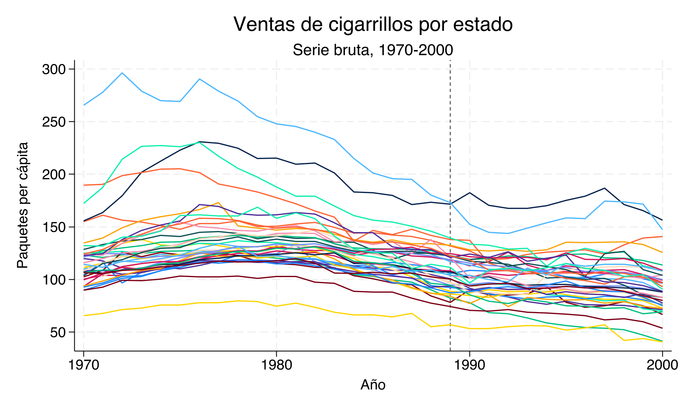
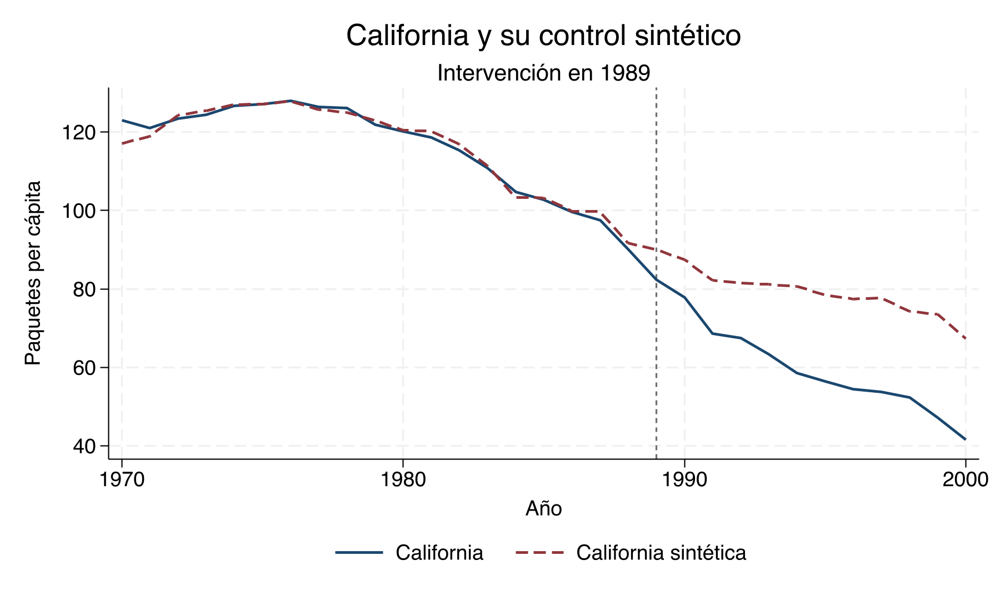
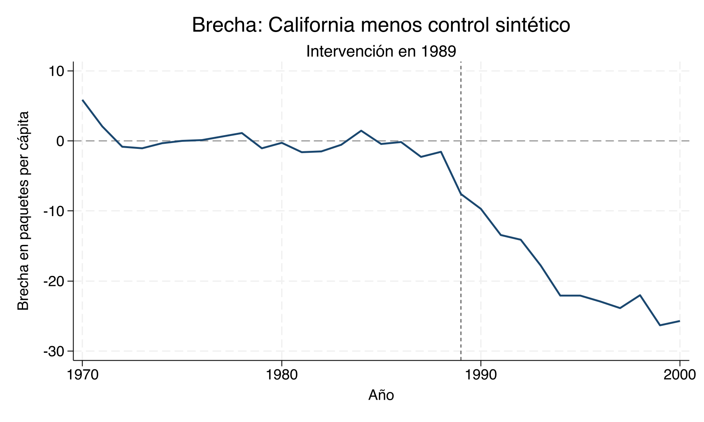
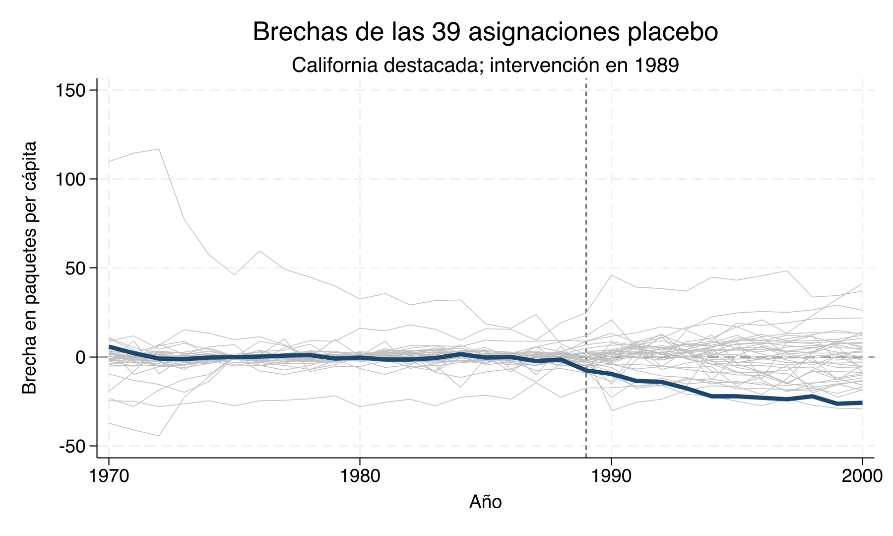
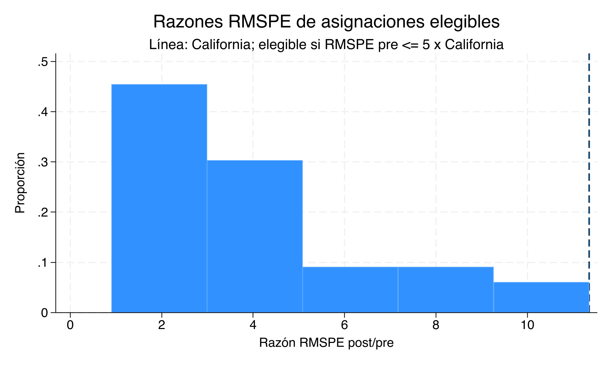
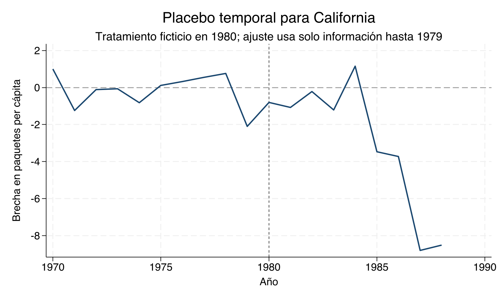
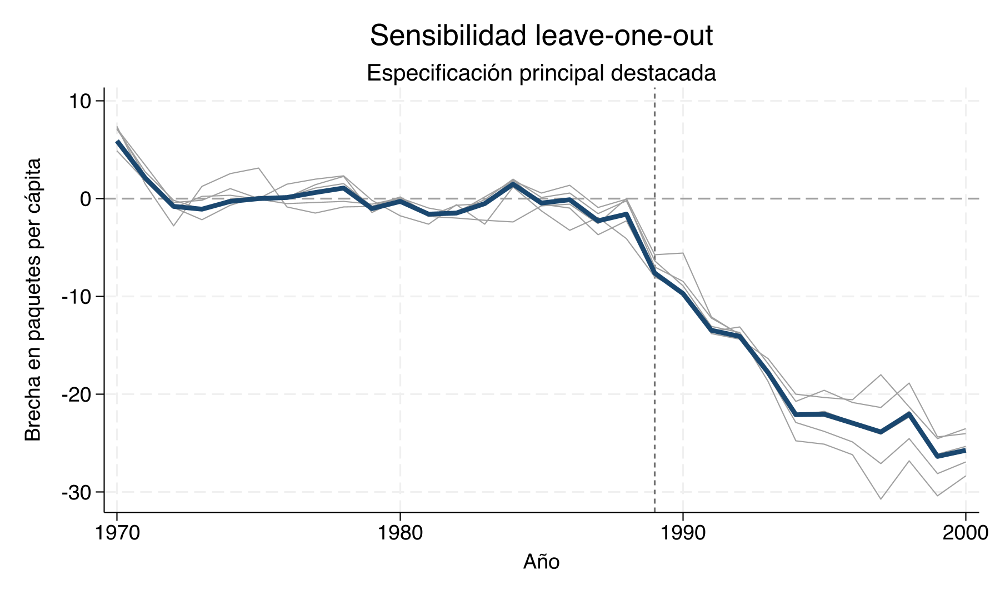

Capitulo 21 Controles sintéticos — Clase empírica
Materiales para la clase
Lecturas centrales
Metas de aprendizaje
- Estimar y reconstruir California sintética.
- Auditar ajuste, placebos y sensibilidad a donantes.
- Interpretar la brecha como un estimando dinámico bajo los supuestos del diseño.
Pregunta empírica y datos
La Proposición 99 fue aprobada en noviembre de 1988 y entró en vigor en enero de 1989. Elevó el impuesto a los cigarrillos en California y financió un programa amplio de control del tabaco. Esta cronología justifica fijar 1989 como primer periodo tratado. La pregunta es concreta: ¿qué trayectoria habría seguido el consumo de cigarrillos en California desde 1989 si la política no se hubiera implementado? Solo una unidad recibe el tratamiento y no hay un estado que sea, por sí mismo, un control natural obvio.
La base synth_smoking.dta reproduce la muestra analítica de
Abadie, Diamond y Hainmueller (2010).
Esa muestra ya excluye el Distrito de Columbia y los estados que, durante
1989–2000, adoptaron programas amplios de control del tabaco o aumentos grandes
del impuesto estatal. Quedan California y 38 donantes. El archivo no permite
reconstruir por sí solo cada exclusión histórica; el criterio proviene de la
fuente primaria y la auditoría reproducible verifica el universo observable.
El panel cubre 1970–2000: ADH comienza en 1970 porque desde ese año el resultado
está disponible para todos los controles y termina en 2000 antes de que políticas
posteriores comprometieran más unidades potenciales. cigsale mide ventas de
paquetes de cigarrillos per cápita. California es la unidad 3. Los predictores son
consumo de cerveza (beer), ingreso por habitante en logaritmos (lnincome),
precio minorista de los cigarrillos (retprice), proporción de población de 15 a
24 años (age15to24) y rezagos seleccionados del resultado.
| Análisis | Variable | Ventana | Esperadas | Observadas | Faltantes | Auditoría aprobada |
|---|---|---|---|---|---|---|
| panel | states | 1970-2000 | 39 | 39 | 0 | Sí |
| panel | years | 1970-2000 | 31 | 31 | 0 | Sí |
| panel | unit_years | 1970-2000 | 1209 | 1209 | 0 | Sí |
| donor_pool | eligible_donors | 1970-2000 | 38 | 38 | 0 | Sí |
| main | cigsale | 1970-2000 | 1209 | 1209 | 0 | Sí |
| main | beer | 1984-1988 | 195 | 195 | 0 | Sí |
| main | lnincome | 1980-1988 | 351 | 351 | 0 | Sí |
| main | retprice | 1980-1988 | 351 | 351 | 0 | Sí |
| main | age15to24 | 1980-1988 | 351 | 351 | 0 | Sí |
| main | cigsale | 1975 | 39 | 39 | 0 | Sí |
| main | cigsale | 1980 | 39 | 39 | 0 | Sí |
| main | cigsale | 1988 | 39 | 39 | 0 | Sí |
| time_placebo | lnincome | 1972-1979 | 312 | 312 | 0 | Sí |
| time_placebo | retprice | 1972-1979 | 312 | 312 | 0 | Sí |
| time_placebo | age15to24 | 1972-1979 | 312 | 312 | 0 | Sí |
| time_placebo | cigsale | 1970 | 39 | 39 | 0 | Sí |
| time_placebo | cigsale | 1975 | 39 | 39 | 0 | Sí |
| time_placebo | cigsale | 1979 | 39 | 39 | 0 | Sí |
La tabla documenta 39 estados por 31 años, es
decir, 1209 observaciones en un panel balanceado. cigsale está
completo en los 1.209 estado-año, y cada predictor está disponible sin faltantes
en la ventana exacta usada por la especificación principal o el placebo temporal.
La fila de elegibilidad confirma los 38 donantes que ya contiene
la muestra ADH; no sustituye la justificación institucional de sus exclusiones.
Diseño antes de cómputo. La fecha de intervención, el conjunto donante, los predictores y las ventanas se fijan antes de estudiar la brecha posterior. Los estados donantes deben permanecer sin exposición directa ni indirecta relevante a Prop 99. Un promedio simple de estados no tratados no impone comparabilidad y no es un control sintético.
Inspección de las series brutas

Figure 21.1: Ventas estatales de cigarrillos antes y después de 1989. Fuente: salida canónica de Stata.
La dispersión de niveles y tendencias deja claro por qué el promedio simple de los otros estados sería una elección arbitraria. El método buscará una combinación convexa que reproduzca la historia de California; la figura bruta sirve para detectar heterogeneidad, cambios comunes y posibles unidades atípicas, no para elegir donantes después de ver el efecto.
Especificación y estimación en Stata
El do-file declara el panel, fija 1989 como primer periodo tratado y ejecuta la estimación canónica:
Extracto del do-file completo. No es un script independiente: el preámbulo
resuelve la ruta de trabajo, construye state_id y declara tempfile main_native.
Para reproducir el análisis desde cero debe ejecutarse el
do-file completo.
* El preámbulo ya creó state_id y declaró tempfile main_native.
use "synth_smoking.dta", clear
xtset state_id year
synth cigsale beer(1984(1)1988) lnincome retprice age15to24 ///
cigsale(1988) cigsale(1980) cigsale(1975), ///
trunit(3) trperiod(1989) xperiod(1980(1)1988) ///
mspeperiod(1970(1)1988) nested ///
keep(`main_native') replaceLas tres opciones temporales y algorítmicas cumplen funciones distintas:
xperiod(1980(1)1988)define los años sobre los cualessynthpromedia los predictores ordinarioslnincome,retpriceyage15to24. La ventana escrita dentro debeer(1984(1)1988)y los tres valores puntuales decigsaleprevalecen para esas filas.mspeperiod(1970(1)1988)define los años del resultado pretratamiento cuyo MSPE se minimiza para seleccionar la importancia predictora \(V\).nestedelige el algoritmo de optimización que busca \(V\); no define una ventana de datos ni crea una muestra de validación.
Por tanto, la trayectoria previa completa es un diagnóstico necesario de ajuste
in-sample. No es una prueba reservada ni una validación out-of-sample.
trunit(3) identifica California, trperiod(1989) fija el inicio y keep()
conserva la trayectoria nativa producida por synth.
No se usan observaciones posteriores a 1988 para escoger los pesos. Una vez estimados, los mismos pesos se aplican a las ventas de los donantes en todo el horizonte 1970–2000.
Entorno observado de reproducción. Los artefactos canónicos se regeneraron con
StataNow/SE 19.5 para Unix (Intel 64-bit), revisión 15 Apr 2026, y synth 0.0.7
(26 Jan 2014). La instrucción version 19.0 del do-file congela la sintaxis
interpretada; no reemplaza la versión instalada que se documenta aquí.
¿Quién construye a California sintética?
El archivo results/synth_weights.csv contiene los pesos devueltos por Stata para
las 38 unidades donantes. La tabla muestra aquellas con peso estrictamente
positivo; los 32 estados restantes reciben peso numéricamente
cero.
| Estado | Identificador Stata | Peso |
|---|---|---|
| Colorado | 4 | 0,160 |
| Connecticut | 5 | 0,068 |
| Montana | 19 | 0,200 |
| Nevada | 21 | 0,236 |
| New Mexico | 23 | 0,001 |
| Utah | 34 | 0,335 |
Los 6 donantes con peso positivo son Colorado, Connecticut, Montana, Nevada, New Mexico, Utah. El mayor peso corresponde a Utah (0,335). Los pesos son no negativos y suman 1,000, de modo que el contrafactual interpola dentro del conjunto donante. La concentración es informativa sobre soporte y dependencia; no reparte el efecto de la política entre estados.
Balance de predictores
Los pesos deben evaluarse por lo que logran reproducir, no por su apariencia. La
tabla combina results/synth_predictor_balance.csv con
results/synth_v_weights.csv: conserva la escala original de cada predictor y
muestra la diagonal de \(V\) devuelta por synth.
| Predictor | California | Sintética | Diferencia (tratada - sintética) | Importancia V |
|---|---|---|---|---|
| beer(1984(1)1988) | 24,280 | 24,225 | 0,055 | 7.465e-06 |
| lnincome | 10,077 | 9,859 | 0,218 | 1.036e-07 |
| retprice | 89,422 | 89,427 | -0,005 | 9.983e-01 |
| age15to24 | 0,174 | 0,174 | -0,000 | 7.781e-06 |
| cigsale(1988) | 90,100 | 91,673 | -1,573 | 1.119e-05 |
| cigsale(1980) | 120,200 | 120,482 | -0,282 | 5.129e-06 |
| cigsale(1975) | 127,100 | 127,117 | -0,017 | 1.694e-03 |
El balance es cercano, pero no exacto. Por ejemplo, la discrepancia en ventas de
1988 es -1,573 paquetes per cápita y la de ingreso es
0,218 puntos logarítmicos, cerca de
24,3% en niveles. Sin embargo, lnincome recibe
una importancia \(V\) de apenas
1.04e-07, mientras
retprice concentra
0,998. \(V\) no es un coeficiente causal: indica cuánto
penaliza el algoritmo cada discrepancia al construir \(W\). Tampoco conviene ordenar
la calidad por diferencias absolutas entre filas porque las escalas son distintas.
Revisar la trayectoria completa previa es un diagnóstico necesario de ajuste
in-sample, incluidos cambios que no entraron como predictores puntuales; no es
una prueba reservada de validez.
Reconstrucción manual del resultado de synth
Para auditar el estimador, el do-file combina las ventas observadas de cada donante con los pesos exportados:
\[ \widehat Y^{N}_{California,t} =\sum_{j\in\mathcal D}\widehat w_jY_{jt}, \qquad \widehat\alpha_t=Y_{California,t}-\widehat Y^{N}_{California,t}. \]
Después compara esa suma con _Y_synthetic, la serie nativa de synth. El error
máximo en los 31 años es 9.9e-14,
menor que la tolerancia de \(10^{-8}\). Esta coincidencia verifica que
la trayectoria publicada se deriva de los pesos mostrados y no de otra rutina.
| Año | California | Sintética de synth | Suma manual ponderada |
|---|---|---|---|
| 1970 | 123,0000 | 117,1225 | 117,1225 |
| 1988 | 90,1000 | 91,6735 | 91,6735 |
| 1989 | 82,4000 | 90,0026 | 90,0026 |
| 2000 | 41,6000 | 67,3187 | 67,3187 |
Trayectoria observada y contrafactual

Figure 21.2: California observada y California sintética. La línea vertical marca el inicio de Prop 99.
Antes de 1989 las dos series siguen niveles y giros parecidos, con discrepancias pequeñas pero visibles. Después, las ventas observadas en California se ubican por debajo del contrafactual y la separación aumenta. La distancia vertical en cada año es un estimado dinámico, no una comparación antes–después con el propio nivel de California.
La brecha anual y su magnitud

Figure 21.3: Brecha anual: California menos California sintética.
La brecha se define siempre como tratada menos sintética. Su promedio entre 1989 y 2000 es -18,97 paquetes per cápita; durante ese horizonte va de -26,33 a -7,60. El signo negativo indica menores ventas observadas que las estimadas para California sin Prop 99. La lectura causal exige que, en ausencia de la política, la relación que reconstruyó el periodo previo hubiera permanecido estable.
| Año | California | Sintética | Brecha |
|---|---|---|---|
| 1989 | 82,40 | 90,00 | -7,60 |
| 1990 | 77,80 | 87,51 | -9,71 |
| 1991 | 68,70 | 82,16 | -13,46 |
| 1992 | 67,50 | 81,58 | -14,08 |
| 1993 | 63,40 | 81,16 | -17,76 |
| 1994 | 58,60 | 80,69 | -22,09 |
| 1995 | 56,40 | 78,46 | -22,06 |
| 1996 | 54,50 | 77,44 | -22,94 |
| 1997 | 53,80 | 77,67 | -23,87 |
| 1998 | 52,30 | 74,35 | -22,05 |
| 1999 | 47,20 | 73,53 | -26,33 |
| 2000 | 41,60 | 67,32 | -25,72 |
RMSPE: ajuste antes y después
Para una ventana \(\mathcal T\) el error cuadrático medio de predicción es
\[ RMSPE(\mathcal T)= \sqrt{\frac{1}{|\mathcal T|}\sum_{t\in\mathcal T}\widehat\alpha_t^2}. \]
| Unidad | RMSPE pre nativo | RMSPE pre recomp. | RMSPE post | Razón post/pre |
|---|---|---|---|---|
| California | 1,756235 | 1,754306 | 19,913 | 11,351 |
synth reporta un RMSPE pre nativo de 1.756235, calculado durante la optimización
con su precisión interna. La trayectoria guardada y e(W_weights) exponen pesos
redondeados a tres decimales; al reconstruir exactamente esa trayectoria publicada
se obtiene 1.754306. La diferencia es de precisión/redondeo, no de ventana. Todos
los placebos, el filtro y la razón de esta clase usan de manera consistente el
RMSPE recomputado desde las brechas exportadas.
El RMSPE previo cuantifica el error que ya existía donde el tratamiento aún no operaba. La razón post/pre muestra cuánto se deteriora el ajuste después de 1989, pero no tiene signo, no mide el efecto promedio y no es por sí sola una prueba de identificación. Debe leerse junto con la gráfica de brechas, la escala del resultado y las amenazas institucionales al contrafactual.
El buen ajuste previo es necesario, no suficiente. Aumenta la credibilidad de la reconstrucción porque el método reproduce resultados observados sin usar el periodo tratado. No descarta anticipación, interferencia, cambios de medición, otras políticas simultáneas ni shocks particulares de California o de sus donantes con peso positivo.
Placebos espaciales
El do-file reasigna ficticiamente el tratamiento de 1989 a cada una de las 39 unidades, excluye a la unidad placebo de su propio conjunto donante y vuelve a estimar la misma especificación. California está incluida como la asignación real.

Figure 21.4: Brechas de las 39 asignaciones espaciales. California aparece destacada.
Mostrar todas las asignaciones evita ocultar unidades con mal ajuste o brechas grandes. La nube también revela por qué comparar magnitudes posteriores sin mirar el error previo puede ser engañoso: algunas trayectorias placebo ya estaban lejos de cero antes de 1989.
Resultados de todas las asignaciones
| Unidad | RMSPE pre | RMSPE post | Razón post/pre | Elegible 5× RMSPE (clase) | Optimización |
|---|---|---|---|---|---|
| California | 1,754 | 19,913 | 11,351 | Sí | nested |
| Georgia | 1,187 | 11,650 | 9,811 | Sí | nested |
| Missouri | 1,044 | 8,117 | 7,776 | Sí | nested |
| Virginia | 1,923 | 14,088 | 7,328 | Sí | nested |
| Texas | 2,162 | 15,700 | 7,263 | Sí | nested |
| Indiana | 3,762 | 21,543 | 5,727 | Sí | nested |
| Louisiana | 1,493 | 8,002 | 5,360 | Sí | nested |
| West Virginia | 2,846 | 15,192 | 5,339 | Sí | nested |
| Tennessee | 2,281 | 11,104 | 4,868 | Sí | nested |
| Oklahoma | 2,684 | 11,834 | 4,409 | Sí | nested |
| South Carolina | 1,480 | 6,414 | 4,334 | Sí | nested |
| Wisconsin | 1,723 | 7,031 | 4,081 | Sí | nested |
| New Mexico | 2,156 | 7,974 | 3,699 | Sí | nested |
| Maine | 3,096 | 11,292 | 3,647 | Sí | nested |
| Delaware | 6,354 | 20,958 | 3,298 | Sí | nested |
| Montana | 2,300 | 7,409 | 3,222 | Sí | nested |
| North Dakota | 2,839 | 8,650 | 3,047 | Sí | nested |
| Connecticut | 4,039 | 12,187 | 3,017 | Sí | nested |
| Vermont | 3,757 | 11,175 | 2,975 | Sí | nested |
| Mississippi | 2,034 | 5,533 | 2,720 | Sí | nested |
| Idaho | 2,349 | 6,159 | 2,622 | Sí | nested |
| Illinois | 2,577 | 5,778 | 2,242 | Sí | nested |
| Nebraska | 2,309 | 4,863 | 2,106 | Sí | nested |
| Arkansas | 2,052 | 4,218 | 2,056 | Sí | nested |
| Rhode Island | 11,218 | 22,884 | 2,040 | No | nested |
| Kentucky | 20,443 | 39,867 | 1,950 | No | nested |
| South Dakota | 2,956 | 5,734 | 1,940 | Sí | nested |
| Ohio | 1,409 | 2,533 | 1,797 | Sí | nested |
| Iowa | 3,612 | 6,486 | 1,796 | Sí | nested |
| Pennsylvania | 1,669 | 2,708 | 1,622 | Sí | nested |
| Nevada | 6,371 | 9,136 | 1,434 | Sí | nested |
| Colorado | 4,103 | 5,871 | 1,431 | Sí | nested |
| Alabama | 2,286 | 2,595 | 1,135 | Sí | nested |
| Minnesota | 3,938 | 4,045 | 1,027 | Sí | nested |
| Kansas | 3,868 | 3,491 | 0,902 | Sí | nested |
| North Carolina | 9,023 | 7,574 | 0,839 | No | nested |
| Utah | 24,367 | 14,942 | 0,613 | No | default tras rc=430 |
| Wyoming | 9,680 | 5,264 | 0,544 | No | nested |
| New Hampshire | 59,038 | 17,685 | 0,300 | No | nested |
Comparación restringida por ajuste previo
La regla predeclarada conserva una asignación si
\[ RMSPE_i^{pre}\leq 5\,RMSPE_{California}^{pre}. \]
Esta es una convención docente de \(5\times RMSPE\), fijada en el diseño del curso. No replica el filtro de ADH (2010), que conserva unidades bajo \(MSPE_i^{pre}\leq 5\times MSPE_{California}^{pre}\). Como \(MSPE=RMSPE^2\), la regla docente equivale a \(25\times MSPE\) y es más laxa. Con estos artefactos conserva 33 asignaciones; el criterio \(5\times MSPE\) de ADH conservaría 28. La comparación principal de la clase mantiene su regla predeclarada y rotula la diferencia.
El umbral calculado desde los CSV es 8,772. Lo cumplen 33 asignaciones y 6 quedan fuera de la comparación restringida. Entre las elegibles, 1 tiene una razón al menos tan grande como la de California. Por tanto, la proporción observada es 1/33 = 0,0303.

Figure 21.5: Distribución de las razones RMSPE entre asignaciones que cumplen la regla 5×.
Esta fracción es descriptiva: ubica la asignación real dentro de un conjunto finito de ejercicios comparables. Su resolución depende de cuántas asignaciones superan el filtro. No es automáticamente un p-valor asintótico ni convierte la intercambiabilidad de los estados en un hecho.
Regla portable de optimización para Utah
Las 39 asignaciones intentan primero nested. Cualquier falla de
otra unidad o cualquier código distinto de rc=430 detiene el do-file. Solo si
Utah falla exactamente con rc=430 se repite la misma especificación y el mismo
donor pool con la optimización por defecto. El contrato admite, por tanto, dos
resultados reproducibles: 39 corridas nested, o 38 nested más ese único
fallback de Utah. En la corrida canónica observada, Utah devolvió rc=430 con nested y se reestimó con la optimización por defecto. Utah es inelegible bajo 5× RMSPE (24,367 > 8,772), por lo que su ruta de optimización no entra en el numerador ni en el denominador de 1/33.
Placebo temporal de 1980 sin fuga de información
El placebo temporal pregunta si el procedimiento también produce una ruptura cuando se finge que el tratamiento comenzó antes de la intervención real. La reestimación es nueva; no reutiliza los pesos estimados con datos hasta 1988:
Extracto del do-file completo. Este bloque depende del panel temporal panel,
de la lista de donantes time_donors y de tempfile time_native, creados en líneas
anteriores del archivo enlazado. Se muestra aquí la llamada que impide la fuga, no
un programa Stata autocontenido.
* panel, time_donors y tempfile time_native ya fueron creados.
synth cigsale lnincome retprice age15to24 ///
cigsale(1979) cigsale(1975) cigsale(1970), ///
trunit(3) trperiod(1980) xperiod(1972(1)1979) ///
mspeperiod(1970(1)1979) counit(`time_donors') nested ///
keep(`time_native') replaceTodos los predictores y resultados empleados para ajustar los pesos terminan en
1979. mspeperiod(1970(1)1979) impide además que la selección de \(V\) use el
resultado posterior a la fecha ficticia. beer se elimina porque solo está
disponible desde 1984; incluirlo filtraría información posterior al tratamiento
ficticio. Los años 1980–1988 quedan así reservados para evaluar la ruptura
placebo.

Figure 21.6: Placebo temporal con tratamiento ficticio en 1980 y ajuste limitado a información hasta 1979.
En la ventana 1980–1988, la brecha observada tiene una media de -2,96 paquetes per cápita y alcanza un mínimo de -8,80. La combinación sintética ya se separa de California en dirección negativa antes de la intervención real. Este patrón es una alerta para la estabilidad contrafactual: reduce la confianza en que la relación previa se habría mantenido intacta y obliga a interpretar con cautela la brecha posterior a 1989. No invalida mecánicamente el diseño —la escala, persistencia y cronología de ambas rupturas también importan—, pero impide tratar el placebo temporal como evidencia plenamente tranquilizadora.
Sensibilidad leave-one-out
El análisis retira por turno cada donante con peso positivo y vuelve a ejecutar
synth; no renormaliza mecánicamente los pesos originales. Como hay
6 donantes positivos, se obtienen 6 reestimaciones,
cada una con 31 años de brechas.

Figure 21.7: Brecha principal y 6 reestimaciones leave-one-out.
| Donante excluido | RMSPE pre | RMSPE post | Brecha post media |
|---|---|---|---|
| Colorado | 1,917 | 21,103 | -19,81 |
| Connecticut | 1,976 | 19,662 | -18,62 |
| Montana | 1,923 | 18,308 | -17,56 |
| Nevada | 2,426 | 22,484 | -20,69 |
| New Mexico | 1,752 | 20,047 | -19,09 |
| Utah | 2,582 | 18,233 | -17,53 |
Las brechas posteriores medias de las reestimaciones van de -20,69 a -17,53, frente a -18,97 en la especificación principal. La persistencia del signo informa que el patrón no depende de una sola unidad positiva. No prueba que los donantes sean válidos, que estén libres de spillovers o que no exista un shock concurrente; tampoco evalúa sensibilidad a decisiones distintas sobre predictores o fecha.
Lectura conjunta de la evidencia
La evaluación debe conectar cuatro piezas:
- Soporte y balance: los pesos forman una combinación convexa y reproducen razonablemente los predictores y la historia anterior.
- Estimando: cada brecha anual compara California observada con su contrafactual sintético; el promedio posterior resume esa trayectoria sin reemplazarla.
- Rareza placebo: la razón RMSPE de California se compara con asignaciones que tenían capacidad de ajuste previo semejante bajo una regla predeclarada.
- Sensibilidad: el placebo temporal busca quiebres falsos y el leave-one-out detecta dependencia de donantes positivos.
En conjunto, los diagnósticos pueden hacer más o menos creíble el diseño. No sustituyen el argumento institucional sobre no anticipación, ausencia de interferencia, medición estable y falta de políticas concurrentes.
Preguntas de trabajo
SC-S1. Pesos y soporte. Use la tabla de pesos para identificar todos los donantes con contribución positiva. Verifique las restricciones convexas y evalúe qué dicen la concentración de pesos y el balance de predictores sobre el soporte. Explique también qué interpretación de los pesos sería incorrecta.
SC-S2. Calidad de ajuste. Compare el RMSPE previo y posterior, calcule la razón post/pre y relacione esos tres objetos con la tabla de balance y la trayectoria. ¿Qué mide cada uno y por qué el deterioro posterior no basta para establecer identificación causal?
SC-S3. Brecha y estimando. Defina la brecha con el orden correcto, resuma su magnitud entre 1989 y 2000 e interprete su signo y evolución. ¿Bajo qué supuestos esa secuencia puede leerse como el efecto dinámico de Prop 99 para California?
SC-S4. Placebos y sensibilidad. Reconstruya la regla 5× y la proporción de asignaciones elegibles con razón al menos tan grande como California. Luego evalúe qué añaden —y qué no demuestran— la excepción de Utah, el placebo temporal de 1980 y las 6 reestimaciones leave-one-out.